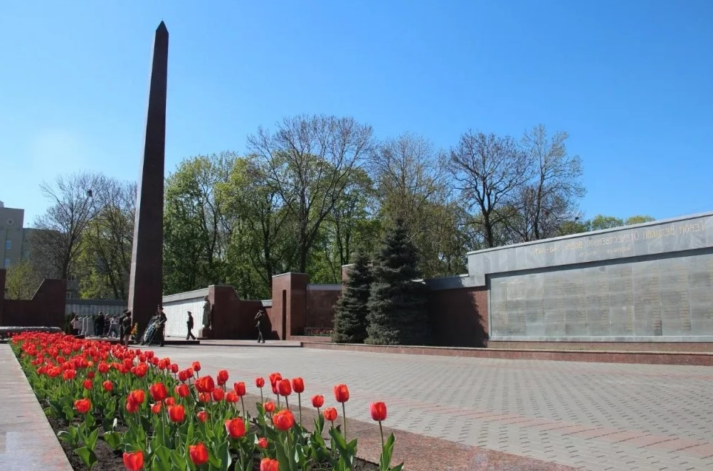

Места нашей области, посвящённые Великой Победе
 Домой
Домой
Площадь Героев
Плоощадь Герооев — площадь на границе Правобережного и Советского округов Липецка. Расположена на пересечении улицы Гагарина и улицы Зегеля. С 1961 до 1967 год называлась площадью Гагарина, как и улица.
Мемориальный комплекс
5 мая 1965 года на площади заложили мемориальный комплекс, посвящённый воинам Великой Отечественной войны. Его создавали архитектор М. В. Мордухович и скульптор Ю. Д. Гришко.
Комплекс представляет собой 19-метровый обелиск и расположенный у его подножия «вечный огонь». От Евдокиевского кладбища, где в 18 братских могилах похоронены погибшие в липецких эвакогоспиталях (находились в зданиях Липецкого курорта) воины, и церкви святой Евдокии улицу Гагарина отделяют высокие стены с изображениями звёзд, выбитых в камне годами войны — 1941—1945.
У «вечного огня» на граните высечены слова: «Здесь замурованы списки липчан погибших в борьбе за свободу и независимость нашей Родины в Великой Отечественной войне 1941 — 1945 Обелиск заложен 9 мая 1965 г».
Торжественное открытие монумента состоялось 21 октября 1967 года. В этот день был зажжён Вечный огонь Славы, за которым специальная делегация липчан ездила в Москву к могиле Неизвестного солдата у Кремлёвской стены. В 1975 году к памятнику были пристроены стены, закрывающие кладбище, по проекту В. Н. Павлова. В течение нескольких десятилетий мемориал реконструировался и дополнялся новыми элементами. В 2005 году к 60-летию победы здесь установили новую мраморную стелу. На ней выгравированы фамилии всех 202 Героев Советского Союза и 34 полных кавалеров ордена Славы — уроженцев Липецкой области.
Изображения:
